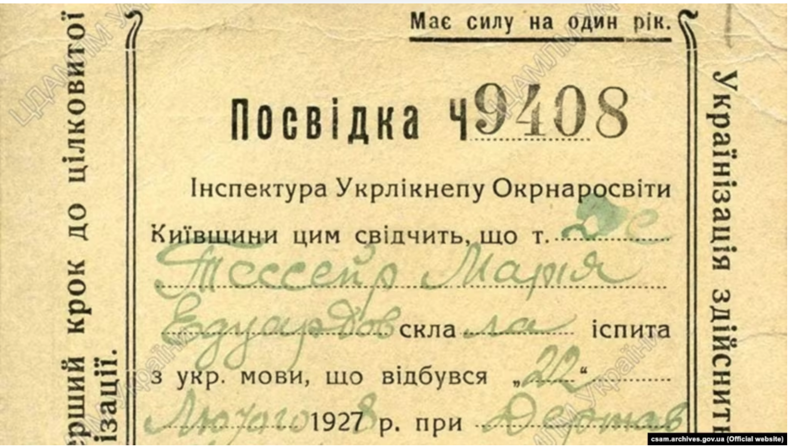

Terry Martin argues that indigenization (korenizatsiia (1923-1934)) was a Soviet policy designed to promote national identities among non-Russian minorities while strengthening the authority and unity of the Soviet state.
In his book The Affirmative Action Empire: Nations and Nationalism in the Soviet Union, 1923–1939 (2001), Martin describes the Soviet Union as an "affirmative action empire" because the government actively supported national minorities through state policies.
What did indigenization involve?
Martin identifies four major aspects of the policy:
National territories: Establishing national republics and autonomous regions based on ethnic and national identities.
National languages: Promoting local languages as official languages of administration, education and public life.
National elites: Recruiting and promoting members of indigenous populations into positions of authority in government, Communist Party institutions and other organizations.
National cultures: Supporting national literature, newspapers, education, films, museums and other cultural activities.
Why did the Soviet government introduce this policy?
According to Martin, there were several objectives:
To prevent the development of anti-Soviet nationalism among non-Russian populations.
To win the support of national minorities for the Bolshevik regime.
To overcome the legacy of Russian imperial domination.
To incorporate national minorities into the Soviet political system.
To strengthen the territorial integrity of the Soviet Union while maintaining centralized political control.
An important contradiction existed: the Soviet government promoted national identities while simultaneously attempting to build a unified socialist state.

Fig.1. Certificate on Passing Ukrainian Language Exam (1928)
All citizens of Ukraine had to pass
Ukrainian language exam as part of indigenization policy
What happened to indigenization under Stalin?
The policy changed significantly during the 1930s:
The Soviet leadership increasingly viewed national movements as threats to central authority.
Indigenous national elites became targets of political purges.
Russian language and Russian political dominance were increasingly restored.
The government introduced a revised nationalities policy that prioritized central control and Soviet unity over the earlier promotion of national cultures.